Ingeniería Militar en
Mecatrónica
Este es el portfolio elaborado por los pasantes de la quinta promoción en Mecatrónica.
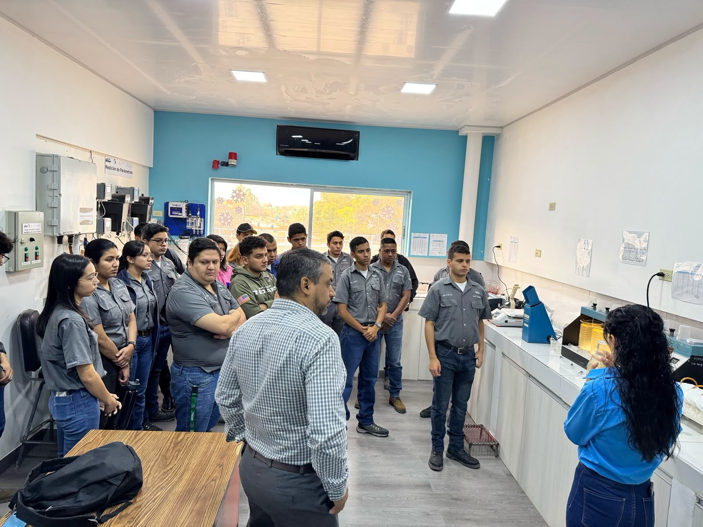
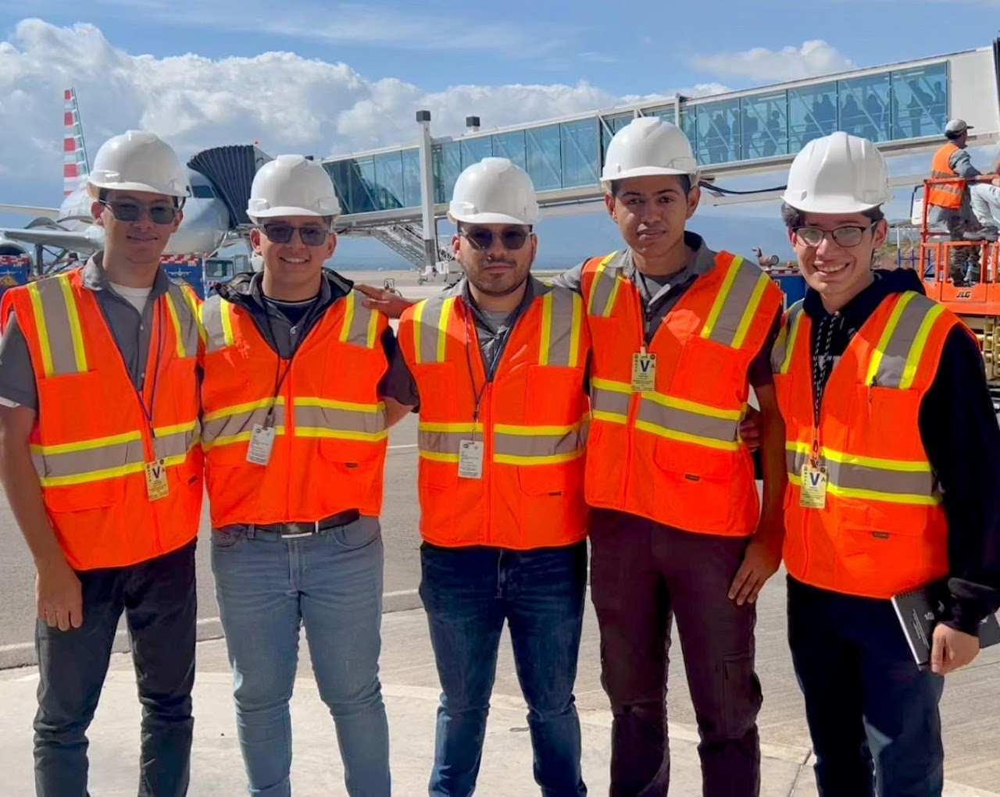
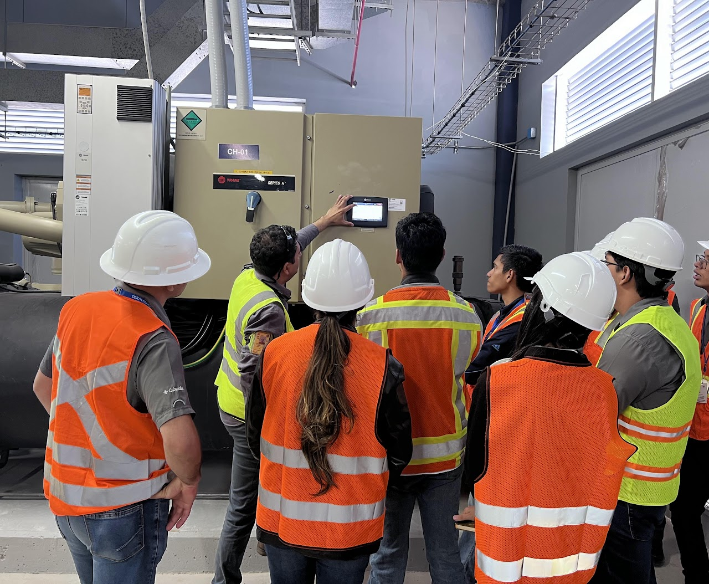
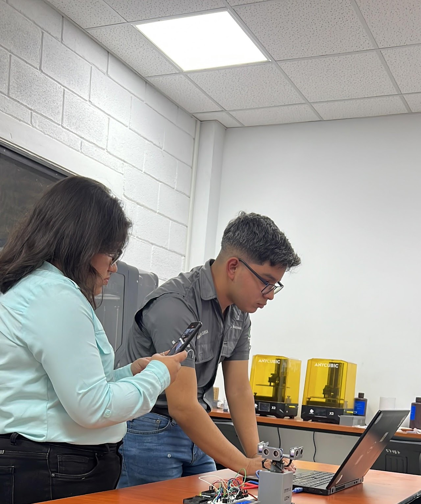
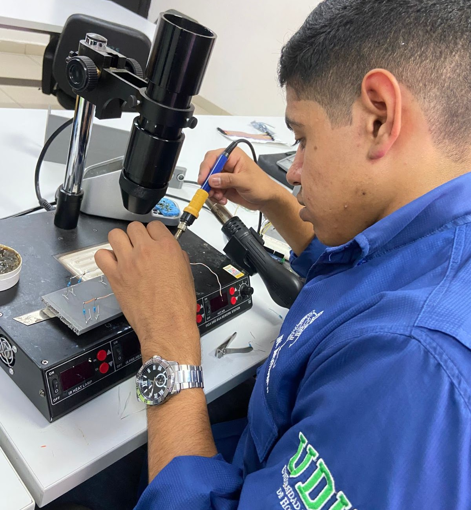
Este es el portfolio elaborado por los pasantes de la quinta promoción en Mecatrónica.





En la Facultad de Ingeniería Mecatrónica de la Universidad de Defensa de Honduras nos dedicamos a formar profesionales altamente capacitados en una disciplina que integra ingeniería mecánica, electrónica, informática y control.
Nuestro objetivo es cultivar el talento necesario para enfrentar los retos tecnológicos del presente y el futuro, contribuyendo al desarrollo sostenible de nuestra nación.
La documentación meticulosa permite reflexionar sobre las experiencias, analizar resultados y formular preguntas críticas. La clave está en adquirir competencias prácticas: aprender haciendo, aplicar conocimientos y trabajar en entornos reales.
Trabajos de robótica, automatización y soluciones técnicas.
Materiales y experiencias que complementan la formación.
Talleres, conferencias, capacitaciones y visitas técnicas.
Conexión con exalumnos y profesionales de la industria.
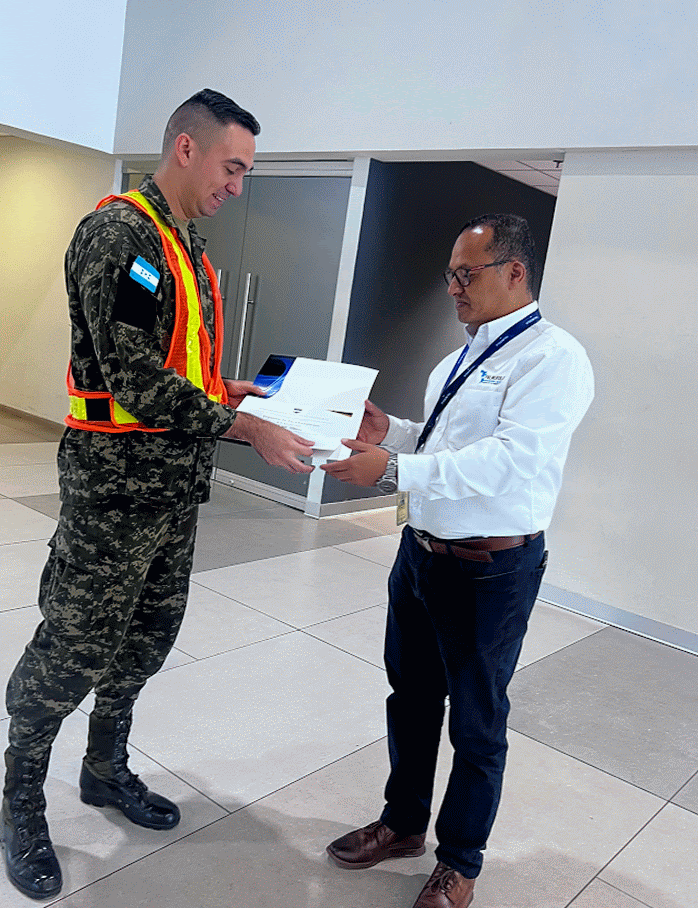
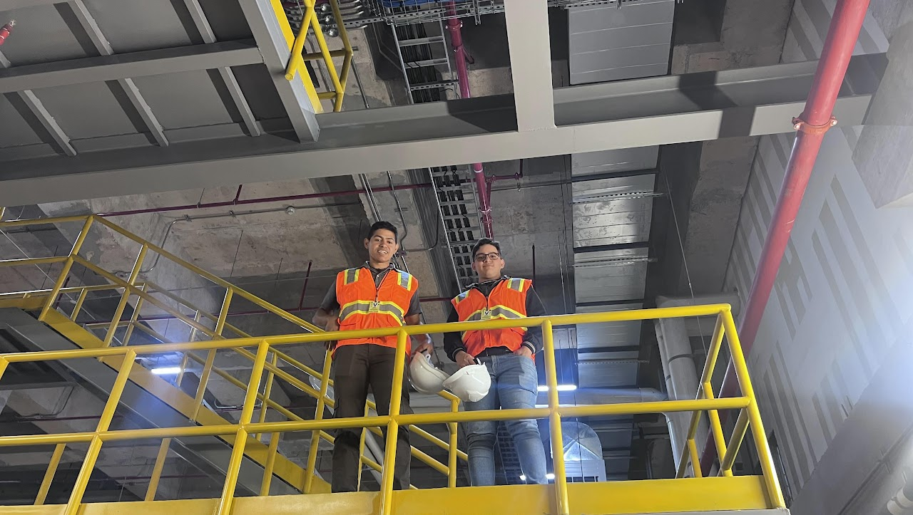
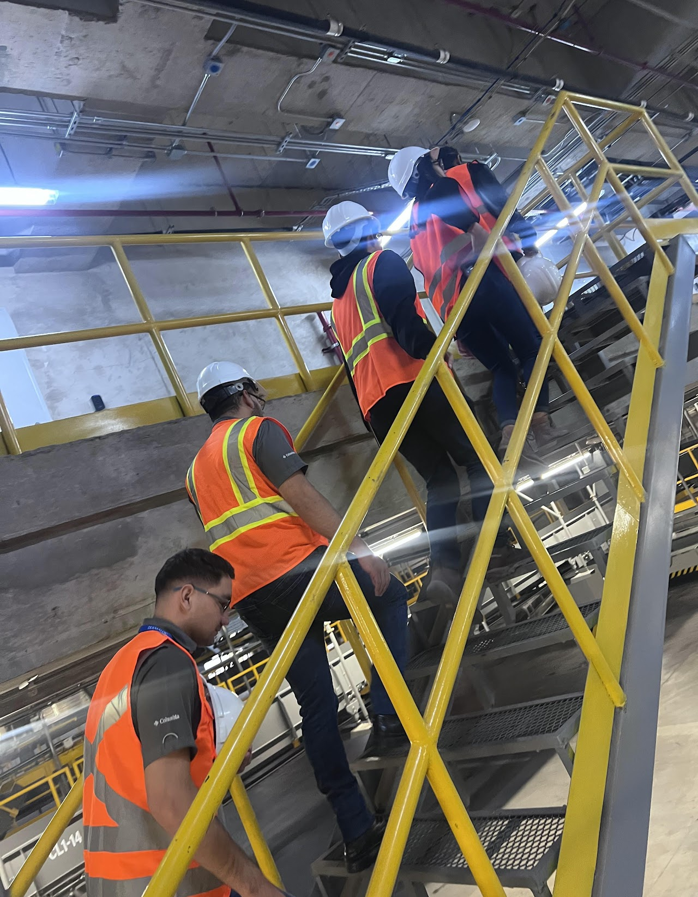
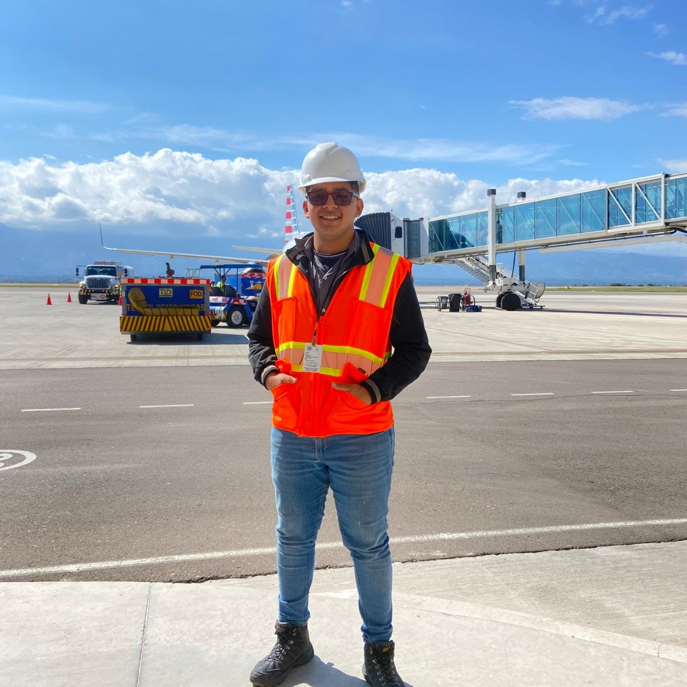
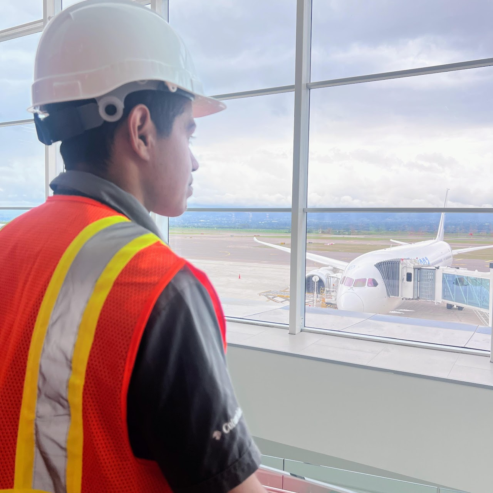
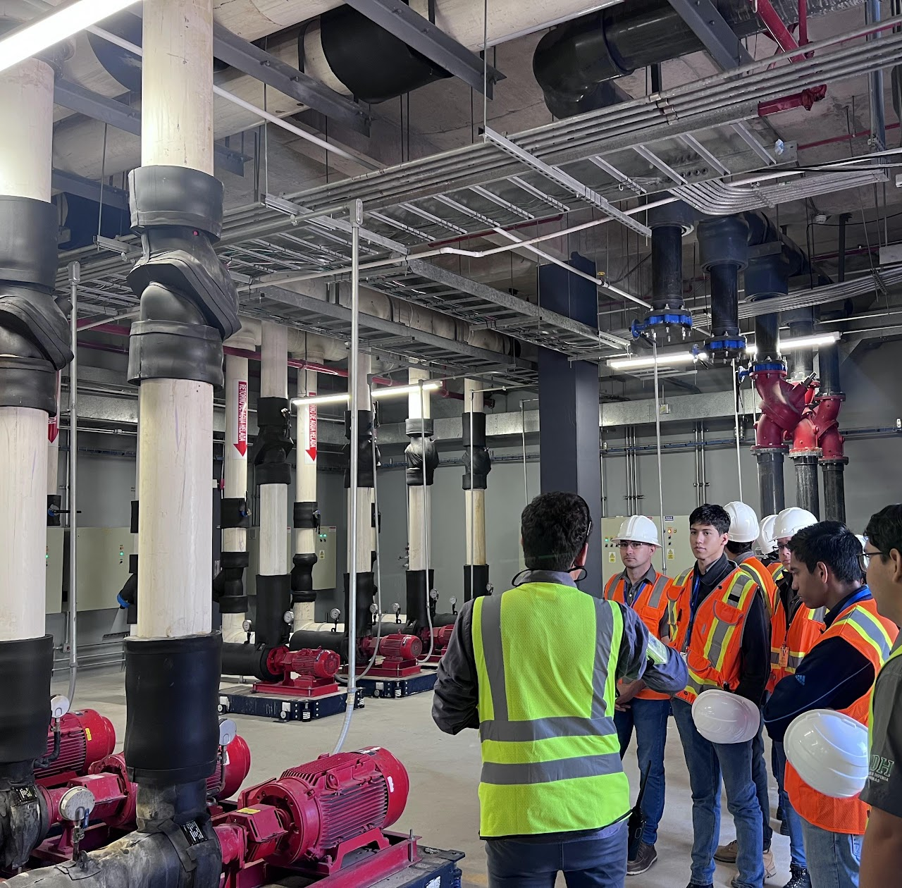
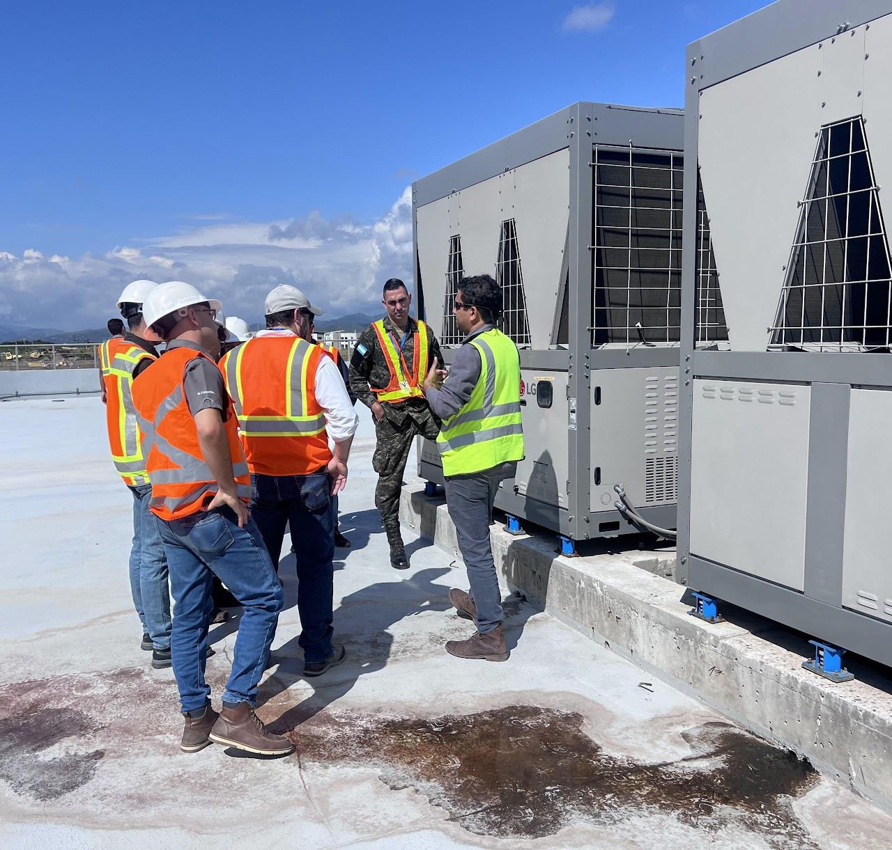
Una selección de proyectos elaborados por estudiantes de la quinta promoción.
Material audiovisual tomado automáticamente de publicaciones y videos independientes.
En la Facultad de Ingeniería Mecatrónica de la Universidad de Defensa de Honduras nos dedicamos a formar profesionales altamente capacitados en el campo de la mecatrónica.
Nuestro objetivo es cultivar talento técnico para enfrentar retos tecnológicos y contribuir al desarrollo sostenible de Honduras.
Publicaciones con evidencia, proceso, recursos y resultados.
Visitas técnicas y prácticas documentadas.
Imágenes locales organizadas por cada experiencia.